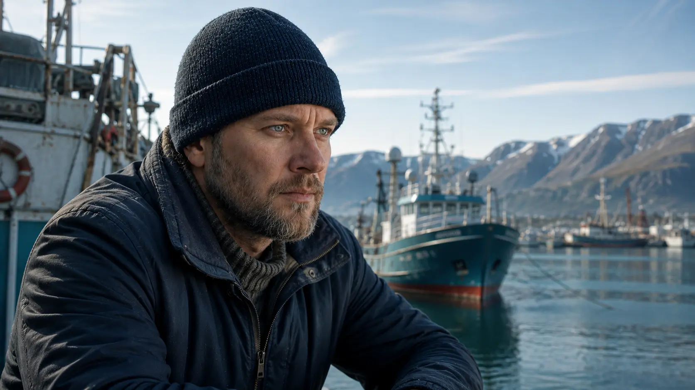
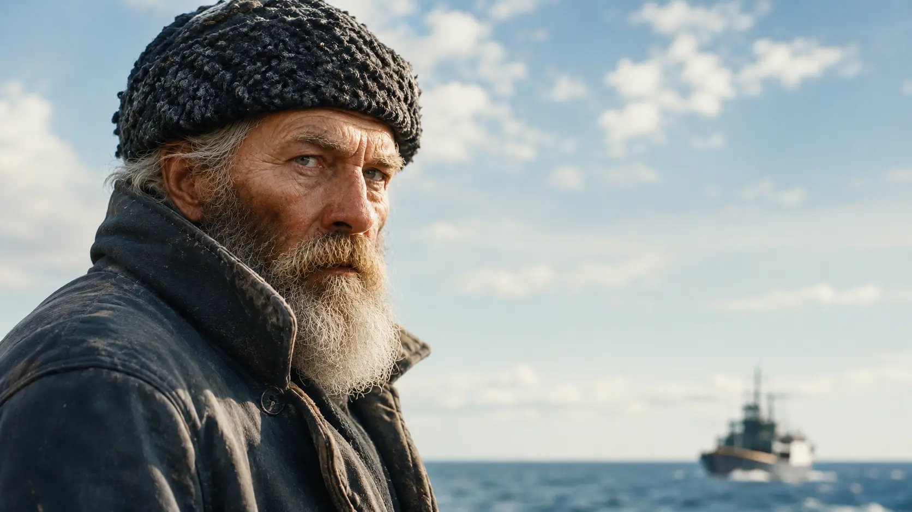
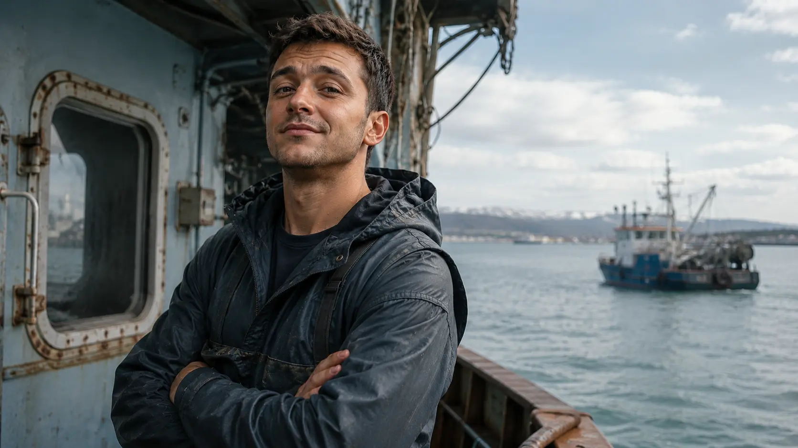
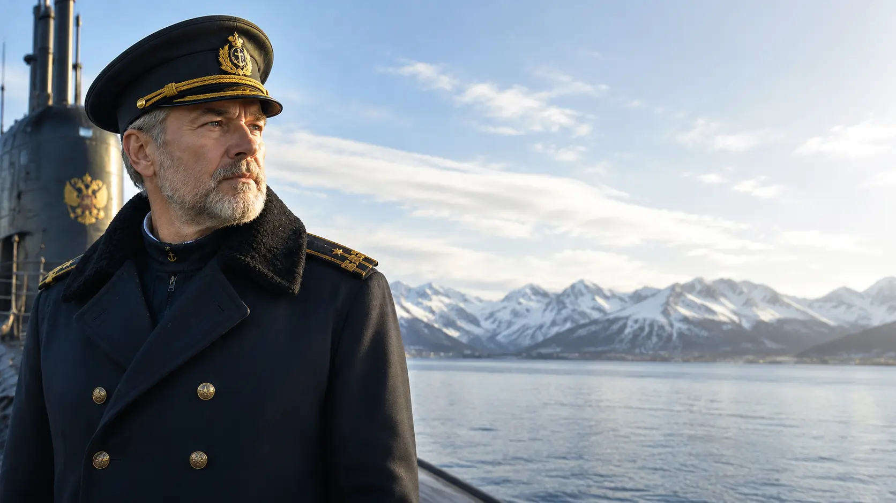

23 de julio de 2023
El minuto cero
Rusia sigue funcionando. Hay farolas encendidas, cafeteras calientes, ascensores detenidos entre plantas y pantallas que todavía anuncian vuelos. Lo que acaba de ocurrir tendrá un impacto global.
Thriller geopolítico · Rusia
Este comienza a las 03:14. Y no termina donde imaginas.
La novela
El 23 de julio de 2023, en la madrugada, Rusia se apagó para el mundo. No hubo comunicado. No hubo explosiones. Solo silencio. Mientras las potencias intentan descifrar si el Kremlin prepara una maniobra final, un pescador regresa a su hogar en Múrmansk.
Las horas pasan y Rusia sigue sin responder. Las imágenes por satélite muestran carreteras desiertas, puertos encendidos y ciudades detenidas en mitad de la noche. Algunos hombres cruzarán la frontera buscando respuestas. Otros intentarán ocultarlas.
23 de julio de 2023
Rusia sigue funcionando. Hay farolas encendidas, cafeteras calientes, ascensores detenidos entre plantas y pantallas que todavía anuncian vuelos. Lo que acaba de ocurrir tendrá un impacto global.
Guerra de Ucrania
El suceso llega cuando Rusia lleva más de un año atrapada en una guerra que no avanza como el Kremlin había imaginado. La tensión con Ucrania y la OTAN ya ha cruzado todas las líneas de confianza. Tal vez ha llegado la hora de cambiar la estrategia. Entonces llega el silencio.
Reacción internacional
Washington, Kiev y Pekín intentan descifrar lo imposible con herramientas diseñadas para guerras humanas. Durante las primeras horas, cada señal se analiza como una amenaza y cada ausencia de respuesta parece esconder una decisión deliberada.
Biografías

Capitán del Vizhái
Capitán del pesquero Vizhái. Regresa desde el mar de Barents a un país intacto y vacío. Su viaje no empieza como una misión, sino como una búsqueda familiar. En él se concentra la parte más humana de la novela: la necesidad de encontrar una respuesta antes incluso de entender la pregunta.

Marinero veterano
Marinero veterano, silencioso y endurecido por décadas de frío polar. Su barba entrecana, su forma de mirar y su economía de palabras lo convierten en una presencia casi ancestral dentro del barco. Habla poco, pero cuando lo hace todos escuchan.

Segundo de a bordo
Segundo de a bordo del Vizhái. Joven, impulsivo y lleno de energía. Su necesidad constante de actuar antes de pensar le jugará malas pasadas en una Rusia donde cualquier error puede volverse irreversible. Bajo sus bromas queda alguien que todavía intenta comportarse como si el mundo no hubiera cambiado.

Supervivencia práctica
Aunque todos le llaman “el profesor”, hace años que dejó de enseñar. La crisis económica lo empujó a abandonar las aulas para trabajar en el Vizhái, donde el frío y el mar pagaban mejor que cualquier escuela de provincia. Hombre práctico, seco y desconfiado, representa a quienes aprendieron a sobrevivir antes incluso de que el mundo desapareciera.

Mecánico del Vizhái
Encargado de los motores y experto en mecánica del Vizhái. Todos lo llaman Misha. Representa al trabajador ruso clásico: resistente, silencioso y acostumbrado a sobrevivir sin hacerse preguntas. Su lealtad no nace del patriotismo ni de las ideas, sino de una costumbre más profunda: no abandonar jamás a los suyos.

Operaciones especiales
Boina verde estadounidense y veterano de operaciones clandestinas que nunca aparecieron en los periódicos. Sam Butcher es el hombre al que recurren cuando una misión debe salir bien aunque nadie pueda reconocer oficialmente que ocurrió. Ha combatido en Irak y Afganistán, arrastra cicatrices físicas y otras que apenas le dejan dormir, y lleva demasiados años entrando en lugares donde la guerra convierte a los hombres en sombras.

Capitán ruso
Capitán del submarino nuclear Khabarovsk, una de las plataformas estratégicas más peligrosas de la Flota del Norte rusa. Veterano respetado y formado al final de la escuela soviética, Ramiev pertenece a una generación de oficiales educados para soportar el fin del mundo sin perder el control. En mitad del caos, representa la última línea entre la disciplina militar y el colapso absoluto.
Escenarios

Puerto ártico, sede de la Flota del Norte y puerta de entrada por el norte a Rusia.

El centro político de Rusia y sede de su gobierno.

La Rusia imperial, a escasos kilómetros de Finlandia. Famosa por sus noches blancas de verano.

Uno de los principales centros militares estadounidenses en Europa y pieza clave de las operaciones de la OTAN.

La ciudad más importante de la región de Belgorod, en la frontera con Ucrania.

Mina de cielo abierto en la península de Kola. Una cicatriz industrial en el norte.

El tránsito entre mundos. La puerta de acceso al Mar Negro.
Dossier geográfico

Vídeo